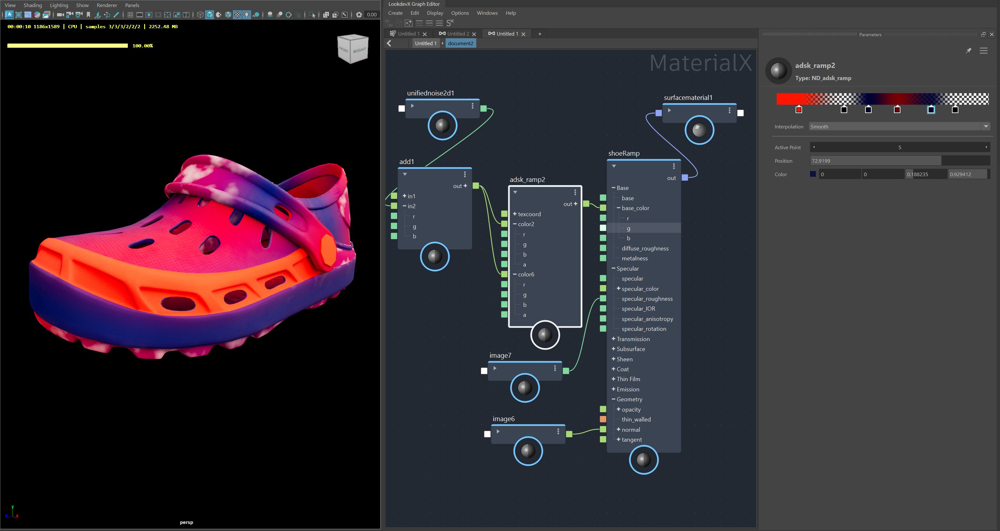

The adsk_ramp node can be used to create gradients of colors, including textures and other nodes, to be used in your material graphs.
Press tab then type "ramp" in the search field, choose adsk_ramp from the list. Alternatively, open the Node Library and search under Libraries, choose adsk_ramp.

The Ramp Swatch is found at the top of the Property Editor and shows the colors in a gradient pattern read from left to right.
Select the type of ramp you want to work with. Choose between Standard, Radial, Circular and Box.
Controls the way colors transition between Control Points. Choose between Linear, Smooth and Step.
Indicates which Control Point is selected in the Ramp. Change the Active Point by manually entering the number of the Control Point desired, or, use the left or right arrows to cycle through the Control Points.
Change the position of the selected Control Point on the graph. Use by manually entering the value of the position (values between 0 and 100), or, click in the field and use the slider.
Set the color of the selected Control Point. Double click the color swatch to open the Color Picker and choose a color. Alternatively, manually enter values in the RGBA boxes, or use the sliders by clicking in each box.
The adsk_ramp node is only supported in Maya 2025.2 with LookdevX 1.5 or newer. Scenes with adsk_ramp nodes opened in unsupported versions of Maya will result in broken material graphs and errors. To succesfully open graphs with Ramps in older versions of Maya, do one of the following:
Environment Variables to be created: